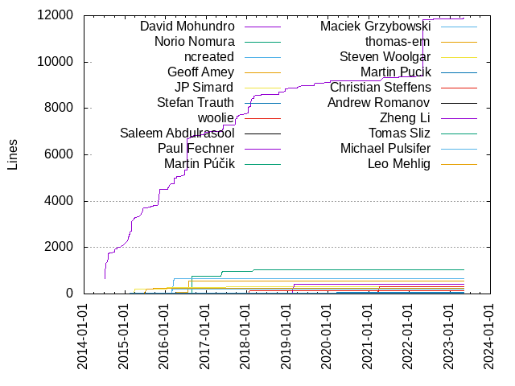
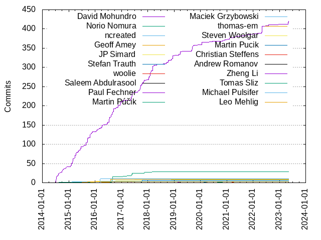

Authors
| Author | Commits (%) | + lines | - lines | First commit | Last commit | Age | Active days | # by commits |
|---|
| David Mohundro | 420 (75.27%) | 11896 | 6225 | 2014-07-08 | 2023-05-09 | 3227 days, 4:08:12 | 190 | 1 |
| Norio Nomura | 28 (5.02%) | 1057 | 306 | 2016-04-09 | 2018-03-08 | 697 days, 7:11:18 | 15 | 2 |
| ncreated | 11 (1.97%) | 642 | 44 | 2016-03-02 | 2016-03-21 | 19 days, 0:47:52 | 5 | 3 |
| Geoff Amey | 9 (1.61%) | 559 | 70 | 2016-04-09 | 2016-07-31 | 113 days, 8:43:40 | 3 | 4 |
| JP Simard | 8 (1.43%) | 326 | 38 | 2015-03-29 | 2018-11-25 | 1337 days, 0:58:48 | 6 | 5 |
| Stefan Trauth | 7 (1.25%) | 25 | 8 | 2017-10-07 | 2017-10-17 | 10 days, 16:43:15 | 3 | 6 |
| woolie | 4 (0.72%) | 325 | 128 | 2021-04-03 | 2021-04-06 | 3 days, 0:18:52 | 2 | 7 |
| Saleem Abdulrasool | 4 (0.72%) | 21 | 5 | 2023-05-09 | 2023-05-09 | 3:41:14 | 1 | 8 |
| Paul Fechner | 4 (0.72%) | 406 | 45 | 2019-03-04 | 2019-03-04 | 1:47:43 | 1 | 9 |
| Martin Púčik | 4 (0.72%) | 55 | 4 | 2020-11-01 | 2020-11-02 | 1 day, 10:18:35 | 2 | 10 |
| Maciek Grzybowski | 4 (0.72%) | 204 | 0 | 2016-02-29 | 2016-03-20 | 20 days, 6:04:57 | 3 | 11 |
| thomas-em | 3 (0.54%) | 14 | 14 | 2016-07-15 | 2016-07-15 | 0:12:18 | 1 | 12 |
| Steven Woolgar | 3 (0.54%) | 5 | 7 | 2021-04-12 | 2021-04-12 | 0:18:28 | 1 | 13 |
| Martin Pucik | 3 (0.54%) | 70 | 2 | 2020-03-18 | 2020-03-18 | 1:04:31 | 1 | 14 |
| Christian Steffens | 3 (0.54%) | 126 | 5 | 2018-01-19 | 2018-01-26 | 6 days, 14:07:43 | 3 | 15 |
| Andrew Romanov | 3 (0.54%) | 35 | 34 | 2019-03-26 | 2019-03-28 | 1 day, 20:30:27 | 2 | 16 |
| Zheng Li | 2 (0.36%) | 27 | 1 | 2017-05-14 | 2017-05-14 | 0:38:49 | 1 | 17 |
| Tomas Sliz | 2 (0.36%) | 5 | 1 | 2014-08-19 | 2015-10-24 | 431 days, 19:24:17 | 2 | 18 |
| Michael Pulsifer | 2 (0.36%) | 18 | 16 | 2015-02-18 | 2015-02-18 | 0:02:27 | 1 | 19 |
| Leo Mehlig | 2 (0.36%) | 258 | 184 | 2015-07-20 | 2015-09-16 | 58 days, 6:35:29 | 2 | 20 |
These didn't make it to the top: Keith Smiley, Ernesto Rivera, Emily Toop, Artur D, Andrew, rhiramat, hslightnin, ainopara, Vitaly Domnikov, Victor Ilyukevich, Tomasz Korzeniowski, The Gitter Badger, Stefan Arentz, Sangjin Lim, Rahul Katariya, Otávio Lima, Manabu Nakazawa, Klaas Pieter Annema, Jan Halousek, Jacob Schatz, Ian Teda, Hwee-Boon Yar, Davide Bertola, Daniel M, Daniel Asher, Benjamin, Artur Dąbkowski
Only top 20 authors shown
Only top 20 authors shown
| Month | Author | Commits (%) | Next top 5 | Number of authors |
|---|
| 2023-05 | David Mohundro | 9 (69.23% of 13) | Saleem Abdulrasool | 2 |
| 2022-08 | David Mohundro | 4 (100.00% of 4) | | 1 |
| 2022-05 | David Mohundro | 16 (100.00% of 16) | | 1 |
| 2022-04 | David Mohundro | 3 (100.00% of 3) | | 1 |
| 2022-01 | David Mohundro | 3 (100.00% of 3) | | 1 |
| 2021-09 | David Mohundro | 4 (100.00% of 4) | | 1 |
| 2021-05 | David Mohundro | 1 (100.00% of 1) | | 1 |
| 2021-04 | woolie | 4 (57.14% of 7) | Steven Woolgar | 2 |
| 2021-02 | David Mohundro | 8 (100.00% of 8) | | 1 |
| 2020-12 | David Mohundro | 2 (100.00% of 2) | | 1 |
| 2020-11 | Martin Púčik | 4 (66.67% of 6) | David Mohundro | 2 |
| 2020-06 | David Mohundro | 2 (100.00% of 2) | | 1 |
| 2020-03 | Martin Pucik | 3 (75.00% of 4) | David Mohundro | 2 |
| 2020-01 | David Mohundro | 7 (100.00% of 7) | | 1 |
| 2019-10 | David Mohundro | 3 (100.00% of 3) | | 1 |
| 2019-09 | David Mohundro | 11 (91.67% of 12) | Jan Halousek | 2 |
| 2019-08 | Keith Smiley | 2 (50.00% of 4) | David Mohundro | 2 |
| 2019-05 | David Mohundro | 1 (100.00% of 1) | | 1 |
| 2019-03 | David Mohundro | 9 (50.00% of 18) | Paul Fechner, Andrew Romanov, Andrew | 4 |
| 2019-02 | David Mohundro | 2 (100.00% of 2) | | 1 |
| 2018-12 | David Mohundro | 9 (100.00% of 9) | | 1 |
| 2018-11 | David Mohundro | 3 (60.00% of 5) | JP Simard, Hwee-Boon Yar | 3 |
| 2018-10 | David Mohundro | 5 (71.43% of 7) | Ernesto Rivera | 2 |
| 2018-09 | David Mohundro | 3 (60.00% of 5) | rhiramat, Manabu Nakazawa | 3 |
| 2018-08 | David Mohundro | 2 (66.67% of 3) | JP Simard | 2 |
| 2018-05 | David Mohundro | 3 (100.00% of 3) | | 1 |
| 2018-03 | David Mohundro | 9 (90.00% of 10) | Norio Nomura | 2 |
| 2018-02 | David Mohundro | 16 (100.00% of 16) | | 1 |
| 2018-01 | David Mohundro | 13 (81.25% of 16) | Christian Steffens | 2 |
| 2017-11 | David Mohundro | 6 (75.00% of 8) | Norio Nomura | 2 |
| 2017-10 | David Mohundro | 8 (53.33% of 15) | Stefan Trauth | 2 |
| 2017-09 | David Mohundro | 12 (92.31% of 13) | Daniel M | 2 |
| 2017-08 | David Mohundro | 5 (62.50% of 8) | Otávio Lima, Artur Dąbkowski, Artur D | 4 |
| 2017-07 | David Mohundro | 2 (66.67% of 3) | JP Simard | 2 |
| 2017-06 | David Mohundro | 6 (100.00% of 6) | | 1 |
| 2017-05 | David Mohundro | 13 (52.00% of 25) | Norio Nomura, Zheng Li, ainopara, Davide Bertola | 5 |
| 2017-01 | David Mohundro | 4 (57.14% of 7) | Sangjin Lim, Norio Nomura, Artur D | 4 |
| 2016-12 | David Mohundro | 10 (90.91% of 11) | Rahul Katariya | 2 |
| 2016-11 | David Mohundro | 6 (75.00% of 8) | hslightnin, Klaas Pieter Annema | 3 |
| 2016-10 | David Mohundro | 3 (75.00% of 4) | JP Simard | 2 |
| 2016-09 | David Mohundro | 8 (100.00% of 8) | | 1 |
| 2016-08 | Norio Nomura | 14 (48.28% of 29) | David Mohundro, Benjamin | 3 |
| 2016-07 | David Mohundro | 12 (50.00% of 24) | Geoff Amey, thomas-em, Daniel Asher | 4 |
| 2016-06 | David Mohundro | 5 (83.33% of 6) | Norio Nomura | 2 |
| 2016-05 | David Mohundro | 2 (100.00% of 2) | | 1 |
| 2016-04 | David Mohundro | 5 (71.43% of 7) | Norio Nomura, Geoff Amey | 3 |
| 2016-03 | ncreated | 11 (57.89% of 19) | David Mohundro, Maciek Grzybowski, Tomasz Korzeniowski | 4 |
| 2016-02 | David Mohundro | 3 (75.00% of 4) | Maciek Grzybowski | 2 |
| 2016-01 | David Mohundro | 5 (62.50% of 8) | JP Simard | 2 |
| 2015-11 | David Mohundro | 7 (100.00% of 7) | | 1 |
| 2015-10 | David Mohundro | 10 (83.33% of 12) | Vitaly Domnikov, Tomas Sliz | 3 |
| 2015-09 | David Mohundro | 13 (86.67% of 15) | Victor Ilyukevich, Leo Mehlig | 3 |
| 2015-08 | David Mohundro | 9 (81.82% of 11) | Emily Toop | 2 |
| 2015-07 | Leo Mehlig | 1 (50.00% of 2) | David Mohundro | 2 |
| 2015-06 | David Mohundro | 10 (100.00% of 10) | | 1 |
| 2015-05 | David Mohundro | 5 (83.33% of 6) | The Gitter Badger | 2 |
| 2015-04 | David Mohundro | 8 (100.00% of 8) | | 1 |
| 2015-03 | David Mohundro | 12 (85.71% of 14) | Jacob Schatz, JP Simard | 3 |
| 2015-02 | David Mohundro | 13 (76.47% of 17) | Michael Pulsifer, Stefan Arentz, Ian Teda | 4 |
| 2015-01 | David Mohundro | 5 (100.00% of 5) | | 1 |
| 2014-12 | David Mohundro | 2 (100.00% of 2) | | 1 |
| 2014-11 | David Mohundro | 4 (100.00% of 4) | | 1 |
| 2014-10 | David Mohundro | 5 (100.00% of 5) | | 1 |
| 2014-09 | David Mohundro | 5 (100.00% of 5) | | 1 |
| 2014-08 | David Mohundro | 7 (87.50% of 8) | Tomas Sliz | 2 |
| 2014-07 | David Mohundro | 18 (100.00% of 18) | | 1 |
| Year | Author | Commits (%) | Next top 5 | Number of authors |
|---|
| 2023 | David Mohundro | 9 (69.23% of 13) | Saleem Abdulrasool | 2 |
| 2022 | David Mohundro | 26 (100.00% of 26) | | 1 |
| 2021 | David Mohundro | 13 (65.00% of 20) | woolie, Steven Woolgar | 3 |
| 2020 | David Mohundro | 14 (66.67% of 21) | Martin Púčik, Martin Pucik | 3 |
| 2019 | David Mohundro | 28 (70.00% of 40) | Paul Fechner, Andrew Romanov, Keith Smiley, Andrew, Jan Halousek | 6 |
| 2018 | David Mohundro | 63 (85.14% of 74) | Christian Steffens, JP Simard, Ernesto Rivera, rhiramat, Norio Nomura | 8 |
| 2017 | David Mohundro | 56 (65.88% of 85) | Norio Nomura, Stefan Trauth, Zheng Li, Artur D, ainopara | 12 |
| 2016 | David Mohundro | 77 (59.23% of 130) | Norio Nomura, ncreated, Geoff Amey, Maciek Grzybowski, JP Simard | 13 |
| 2015 | David Mohundro | 93 (86.92% of 107) | Michael Pulsifer, Leo Mehlig, Emily Toop, Vitaly Domnikov, Victor Ilyukevich | 12 |
| 2014 | David Mohundro | 41 (97.62% of 42) | Tomas Sliz | 2 |
| Domains | Total (%) |
|---|
| mohundro.com | 309 (55.38%) |
|---|
| gmail.com | 170 (30.47%) |
|---|
| users.noreply.github.com | 13 (2.33%) |
|---|
| me.com | 8 (1.43%) |
|---|
| jpsim.com | 8 (1.43%) |
|---|
| stefantrauth.de | 7 (1.25%) |
|---|
| woolsoft.com | 4 (0.72%) |
|---|
| ya.ru | 3 (0.54%) |
|---|
| thebrowser.company | 3 (0.54%) |
|---|
| hibento.de | 3 (0.54%) |
|---|